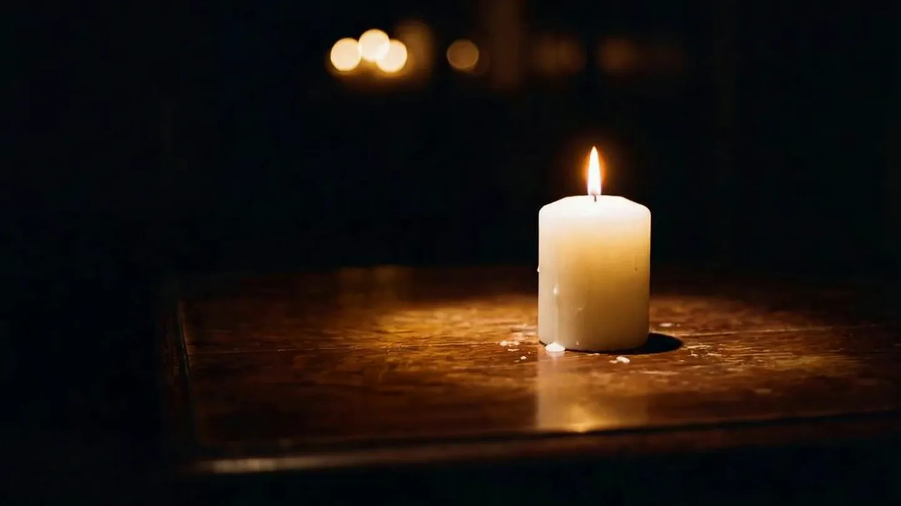
Każde pożegnanie jest wyjątkowe.
Tak samo jak pamięć, która pozostaje.
Rodzinny zakład pogrzebowy w Toruniu. Jesteśmy przy Państwu od pierwszego telefonu aż po dzień, w którym wszystko jest już załatwione.
Co zrobić teraz
Jeżeli właśnie odeszła bliska Państwu osoba, nie trzeba niczego przygotowywać ani nic wiedzieć. Wystarczy jeden telefon — resztą zajmiemy się my.
Proszę zadzwonić
O każdej porze dnia i nocy. Powiemy, co zrobić w ciągu najbliższej godziny, i umówimy odbiór.
Przyjedziemy
Odbierzemy zmarłego z domu, szpitala lub hospicjum i przejmiemy formalności urzędowe oraz cmentarne.
Spotkamy się
W biurze przy Grudziądzkiej albo u Państwa w domu — nasz pracownik przyjedzie o ustalonej godzinie.
Wszystko po naszej stronie
Własne samochody, namiot ceremonialny, kaplice i pełne zaplecze florystyczne. Nie podzlecamy tego, od czego zależy przebieg uroczystości — dzięki temu wiemy, o której godzinie wszystko będzie gotowe.
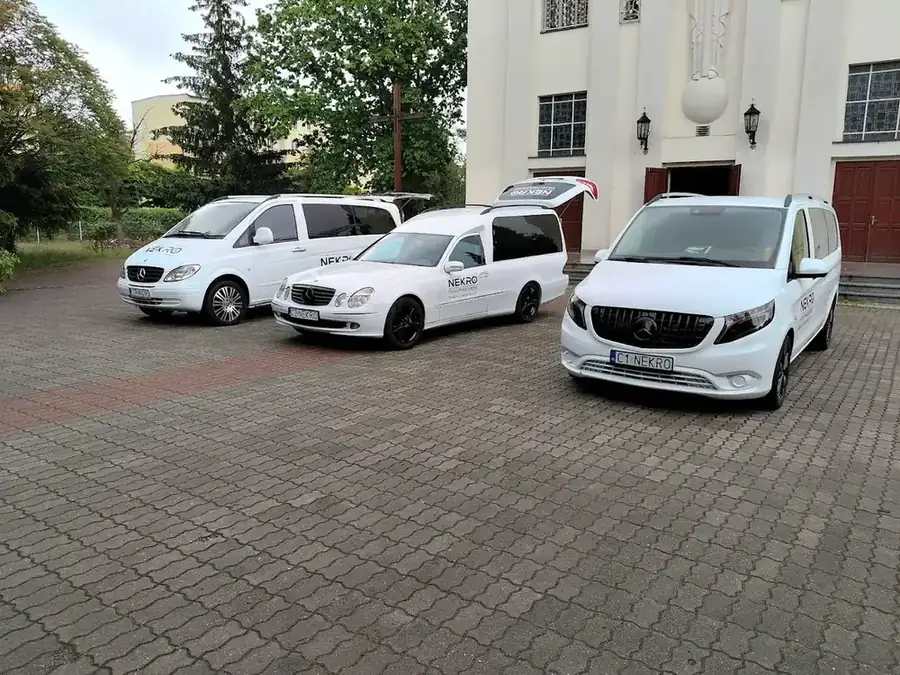
Księga Pamięci
Zawiadomienia o ceremoniach, które organizujemy. Proszę wpisać nazwisko, aby odnaleźć termin — stronę zawiadomienia można przesłać rodzinie jednym linkiem.
śp. Marcin Sadurski
- Msza Święta
- 5.11, godz. 11:00 — kościół pw. Miłosierdzia Bożego i św. Siostry Faustyny, ul. św. Faustyny 7
- Pochówek
- godz. 12:00 — Cmentarz Komunalny nr 2, Toruń
śp. Alojzy Pruski
- Msza Święta
- 24.10, godz. 12:00 — kościół pw. św. Antoniego, ul. św. Antoniego 4
- Pochówek
- godz. 13:00 — cmentarz NMP, ul. Wybickiego 78-80
śp. Wiesława Jabczyńska
- Msza Święta
- 22.10, godz. 10:00 — kościół pw. św. Józefa, ul. św. Józefa 23/35
- Pochówek
- godz. 11:00 — Centralny Cmentarz Komunalny, ul. Grudziądzka 192
Godne pożegnanie to takie, o którym rodzina nie musi myśleć.
Organizujemy pogrzeby tradycyjne i kremacyjne, świeckie i wyznaniowe — zgodnie z wolą rodziny i charakterem uroczystości, na wszystkich cmentarzach w Toruniu i regionie.
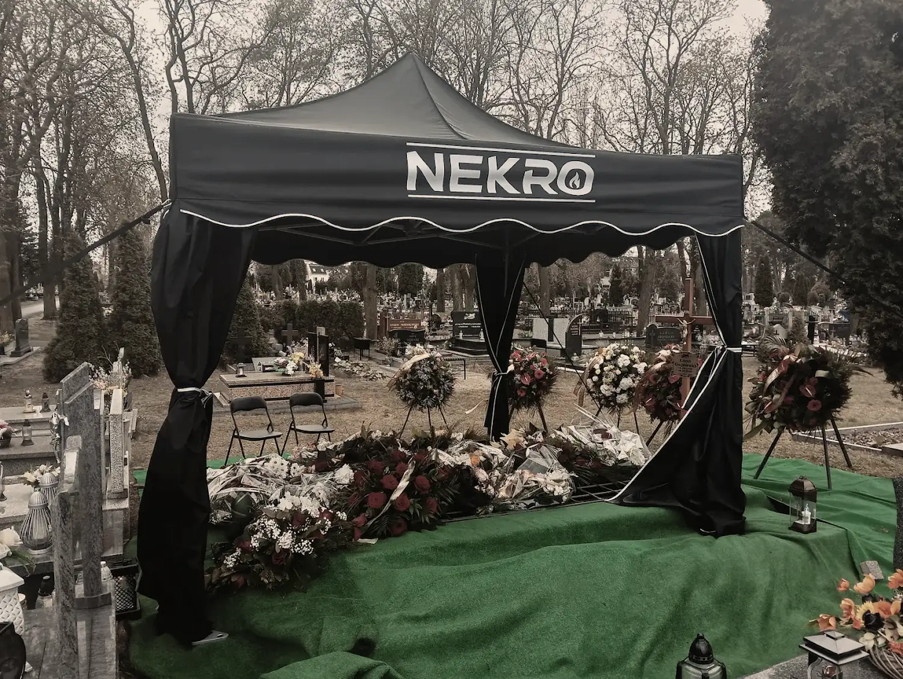
Zakres opieki
Wszystko, czym możemy się zająć — od pierwszego telefonu, przez formalności, po dzień ceremonii i to, co po niej.
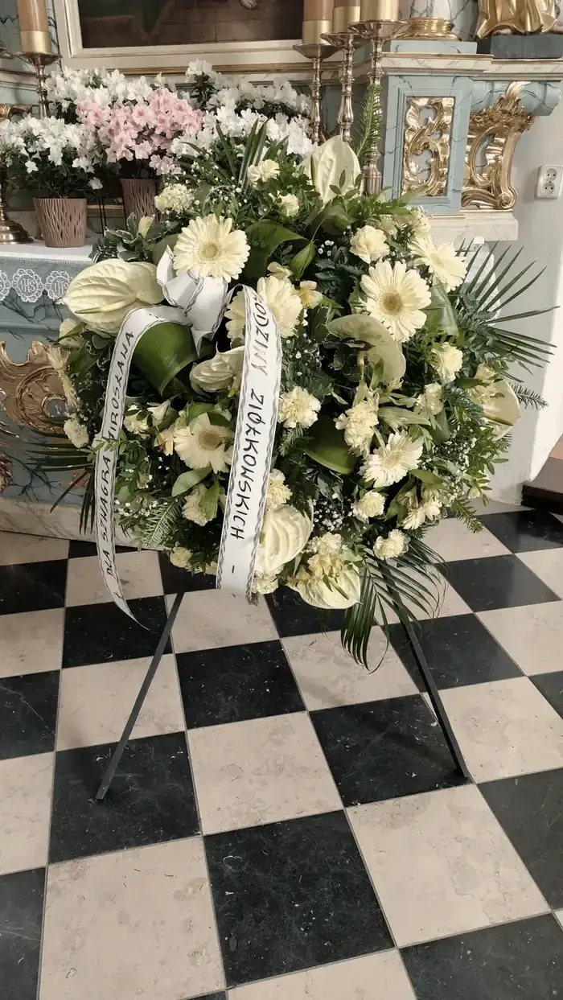
Oprawa florystyczna
Kwiaty, wieńce, wiązanki i znicze. Na życzenie dobierzemy wszystko sami, według Państwa wskazówek.
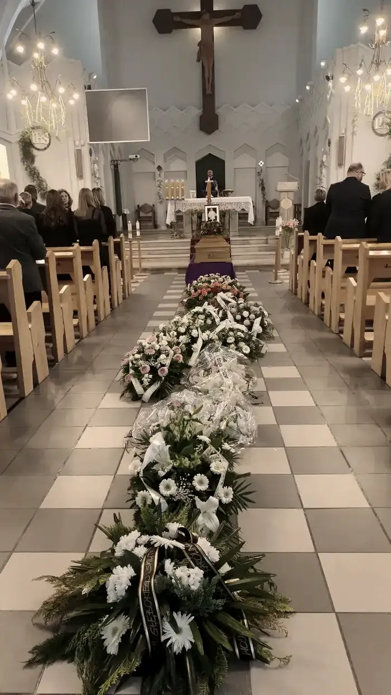
Organizacja pogrzebu
Formalności, przebieg ceremonii, przewóz, wybór trumny, ubrania i kwiatów — całość po naszej stronie.
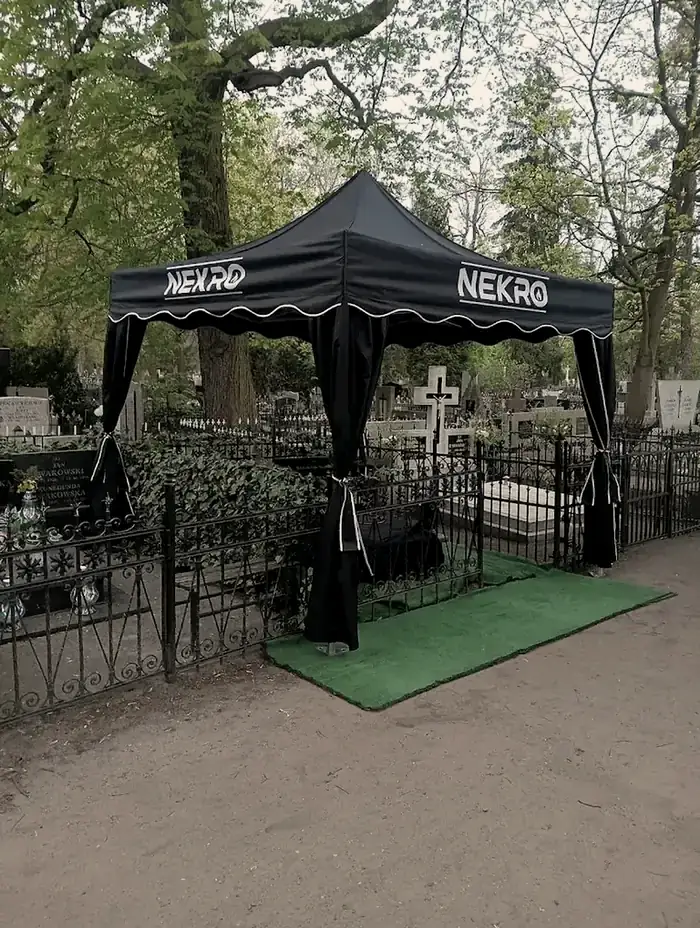
Ceremonia na cmentarzu
Własny namiot ceremonialny, wykładziny i pełne przygotowanie miejsca pochówku.
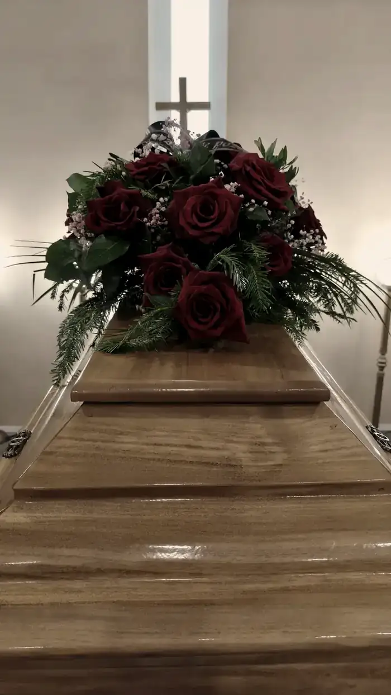
Akcesoria pogrzebowe
Trumny, urny, klepsydry, tabliczki, krzyże i ubrania — wszystko, co potrzebne przy pochówku.
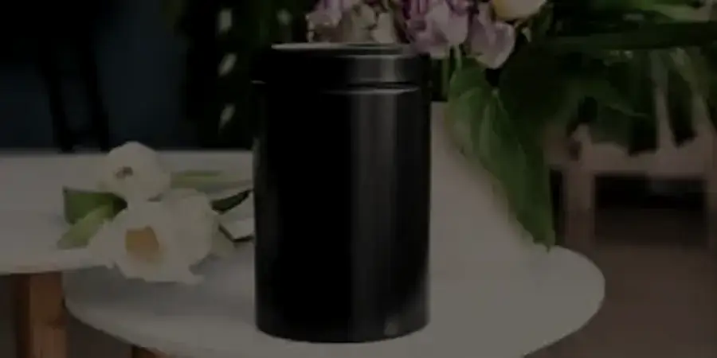
Kremacje
Pogrzeby z uprzednim spopieleniem ciała, przeprowadzane z szacunkiem i zgodnie z procedurami.
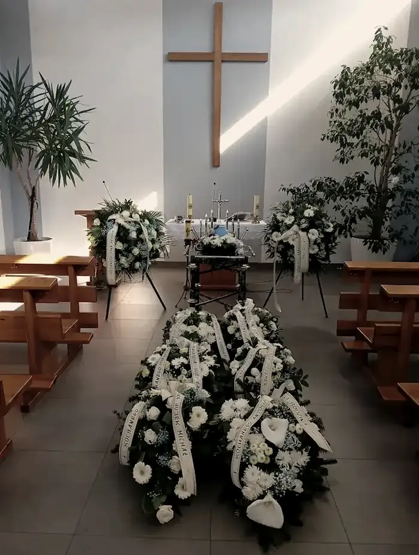
Kaplice
Przygotowanie kaplicy do ceremonii i możliwość pożegnania w spokoju, we własnym czasie.
Formalności i zasiłek
Pomagamy uzyskać zasiłek z ZUS, KRUS i MSWiA oraz skompletować dokumenty.
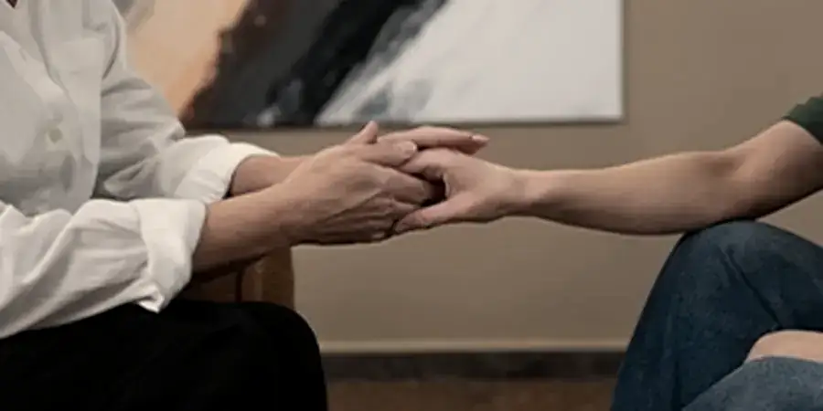
Wsparcie psychologiczne
Współpracujący z nami psycholog towarzyszy bliskim w powrocie do codzienności.
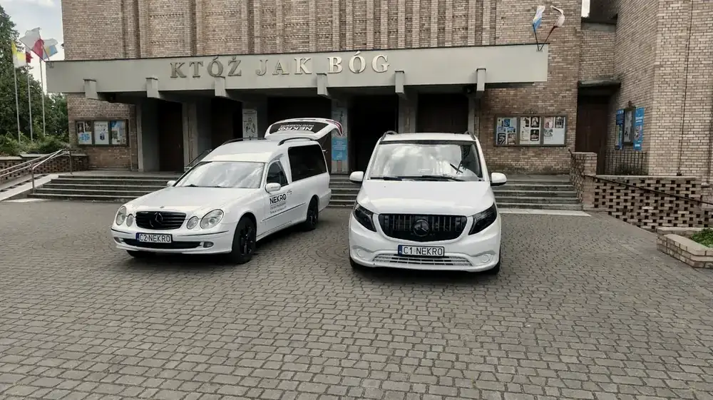
Transport zmarłych
W całym kraju i za granicą, specjalistycznymi pojazdami, zgodnie z przepisami.
Usługi całodobowe
Eksportacja zmarłego z miejsca zgonu bez względu na porę oraz przygotowanie do pochówku.
Nagrobki
Szeroki wybór gotowych nagrobków oraz pomoc w doborze materiału i liternictwa.
Ekshumacje
Przeniesienie ciał lub szczątków zgodnie z zaleceniami służb sanitarnych.
Międzynarodowy transport zwłok
Sprowadzenie zmarłego z zagranicy do Polski wraz z kompletem pozwoleń.
Biuro mobilne
Nasz pracownik przyjedzie do Państwa w dogodne miejsce i o ustalonej godzinie.
Nekrologi
Zawiadomienie o ceremonii publikujemy w Księdze Pamięci — z linkiem do przesłania rodzinie.
Rodzinie przysługuje zasiłek pogrzebowy z ZUS, KRUS lub MSWiA. Podpowiemy, jakie dokumenty przygotować i co warto mieć przy sobie na pierwszym spotkaniu — a wniosek wypełnimy razem z Państwem.
„Chciałbym bardzo podziękować pani Magdzie za całą ceremonię pogrzebową. Podejście do wszystkiego bardzo profesjonalne."
Mariusz Cielas · Google„Profesjonalna, miła i pomocna obsługa. Pomnik wygląda tak, jak chcieliśmy. Szybka realizacja."
Anna Wiśniewska · Google„Dziękujemy za profesjonalną i pełną empatii opiekę podczas pochówku naszej Mamy, Cioci i Siostry."
Jolanta Frejlichowska · GoogleKontakt
- Telefon całodobowy
- +48 725 725 551Odbieramy również w nocy i w święta
- Biuro
- ul. Grudziądzka 192, 87-100 ToruńCzwarty pawilon od strony krematorium
- nekro-zielinski@wp.pl
- Biuro mobilne
- Przyjedziemy do PaństwaWystarczy wspomnieć o tym przez telefon